In Breach, players compete to write the most efficient code and drain the central server's points before their rivals can steal them.
Breach draws inspiration from multiple sources that explore systems, technology, and societal power structures. The cyberpunkian genre emphasizes themes of corporate control, digital infrastructure, and underground resistance, which inform the game's hacker fantasy and network warfare. Mechanically, BREACH shares DNA with the deck-building economy of Dominion — where players buy and build their hand from a shared market — and the social deduction and betrayal tension of Coup, where bluffing and reading opponents is as important as any card played.
Key thematic inspirations include:
Compete to become the top hacker by stealing data points from the Central Server and rival servers while defending your own systems.
Build and execute hacking programs using code-inspired cards while managing memory, security risks, and server defenses.
To out-hack opponents and prove mastery by accumulating the most data points before the Central Server is depleted.
Though Breach takes place on Earth, its current state is far removed from the reality we currently experience. Set in the far off future of the year 4027, the planet is an amalgamation of human flaws that has reached its true extremes. Greed and capitalism manifested in the far too crowded cities that sprawl across what were once sovereign nations, with tall, clustered buildings that make walking feel claustrophobic. The continued effects of exploitation linger in the toxic, suffocating air that hangs over the planet like a haunting ghost. Disregard for life is seen by the lack of natural plants as expansion became rampant and snatching resources to keep them to oneself became the norm. The Earth is barely a planet now. A dead home for those unfortunate enough to have to remain. It is only a matter of time before they, too, become corpses.
The Earth’s richest and wealthiest have long left, taking their rocketships to their new home: Mars. Anyone unable to pay the required fees for these trips were forced to remain on Earth, scrambling to make a living for themselves in a society still determined to churn out profit despite crumbling at the seams. All of the players are part of the billions of unlucky souls who are trying to make a decent life down on Earth. They were programmers, working for The Company™, a corporate monopoly which had sunk their teeth into just about every aspect of life. From organizing the trips to Mars, to owning the land they live on, to providing the food they eat, to the media they consume, it was all property of The Company™.
That was, of course, until that faithful day arrived. In another round of mass layoffs, the players find themselves robbed of a stable income. With The Company’s™ hold on everything, they had no place to turn to. Money ruled this world, and without that, their lives were destined to crumble and decay like all the others before them. Then, came both a blessing and a curse. Their salvation, wrapped in thorns; another one way trip to Mars had been announced. This, however, was different than before. This was the final trip. Anyone unable to pay the exorbitantly large entry fee would be doomed to remain in this disintegrating society, thrown away and discarded to die a slow, pitiful death.
Tickets are disappearing by the day, and prices are only climbing higher. Our protagonists are getting desperate. Time is running out, slipping away through their fingers. How could they get the money in such a short period of time? The answer comes to them suddenly. They had one skill which they’d honed for all these years now. Working for The Company™, they knew all the ins and outs of how they kept their money secure. Hacking into the main server to obtain their funds to leave this life behind was the only way forward, now.
The last trip. The last ticket. It is every man for themselves. For their own sake, they need to breach the central server and obtain money required to finally get out. In 24 hours, the trip shall make its final departure. May the best programmer win.
A visual overview of all physical and printable game components, including the full card set, player server sheets, and the central resource tracker.
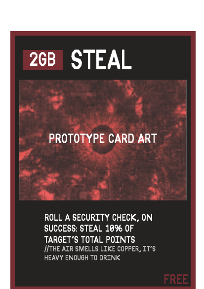
Steal.exe
The core intrusion vector. High risk, high reward.
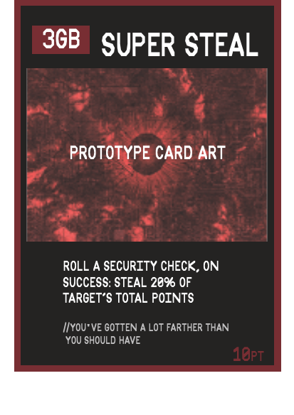
SuperSteal.sh
Advanced data extraction script. 20% point yield.
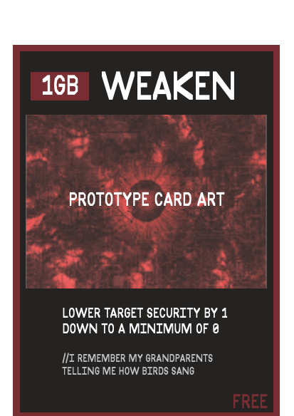
Weaken.bat
Lowers enemy security. Essential for complex breaches.
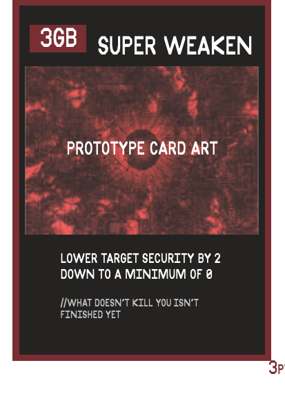
Overdrive_Weaken.bin
Rapidly degrades firewall integrity. 2x power.
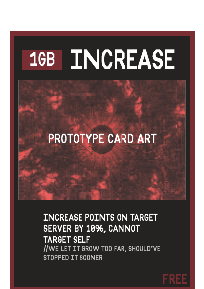
Inflate.py
Adds points to target server. Used for bait or negotiation.
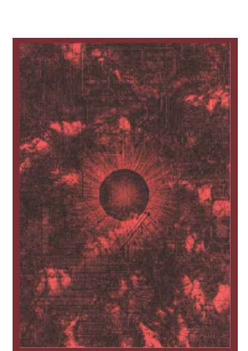
Encrypted Data
Official BREACH card back design.
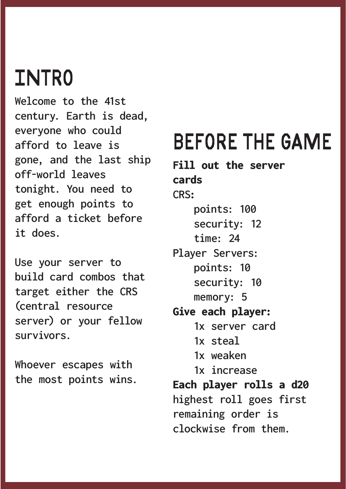
Project: INTRO
The official narrative briefing and setup instructions from the rulebook.
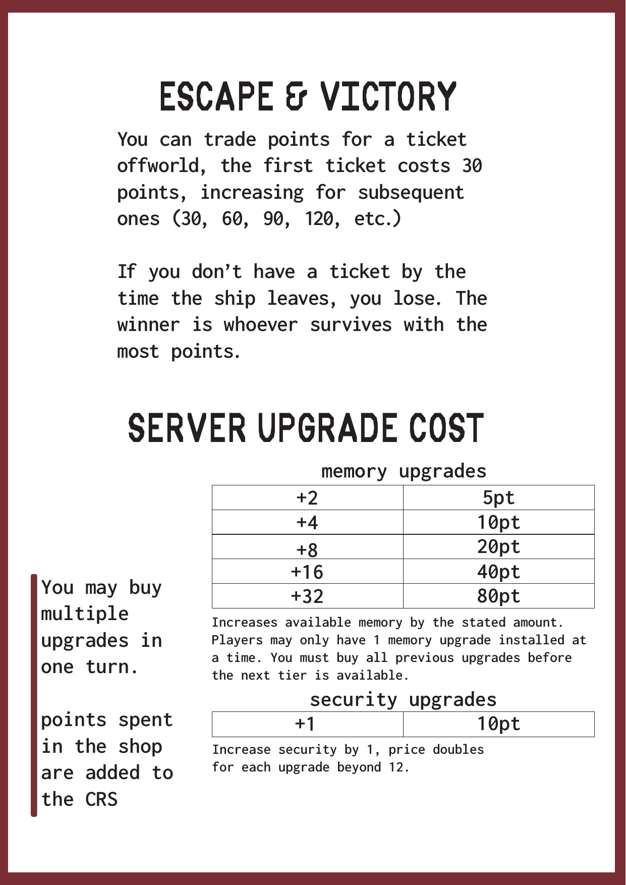
Upgrade Parameters
Detailed quantitative breakdown of RAM and firewall expansion costs.
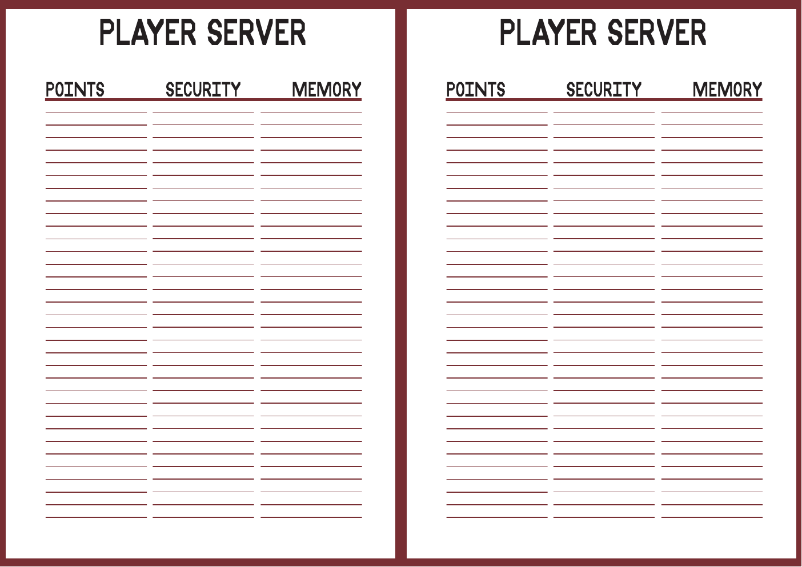
Local Server Dashboard (P2P)
Track your RAM, Firewalls, and harvested data in real-time.
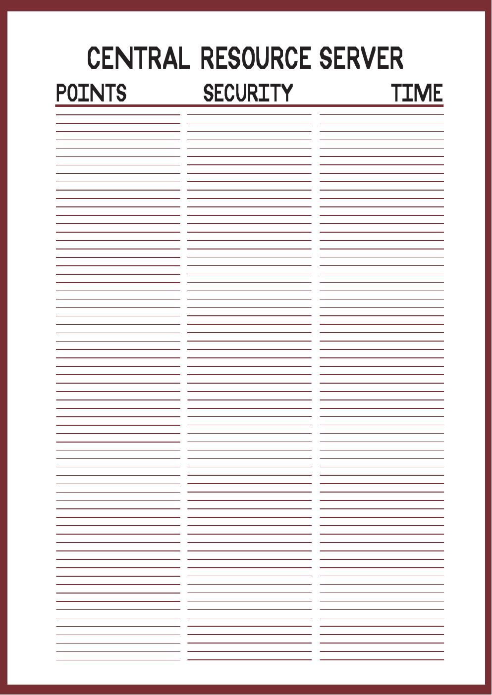
CRS Interface
The global tracker for the 24-round game clock and total points.
Everything you need to play, print, or assess the project.
Complete rules, card reference & examples
Full printable card set with all functions
Full print layout — everything in one file
Points, Security & Memory tracker per player
Minutes and summaries from all group meetings
Full print layout with integrated rules for playtesting
Logical structure trees for primary mechanics
Shared CRS tracker with Time & point pool
Minutes and summaries from all group working sessions throughout the project.
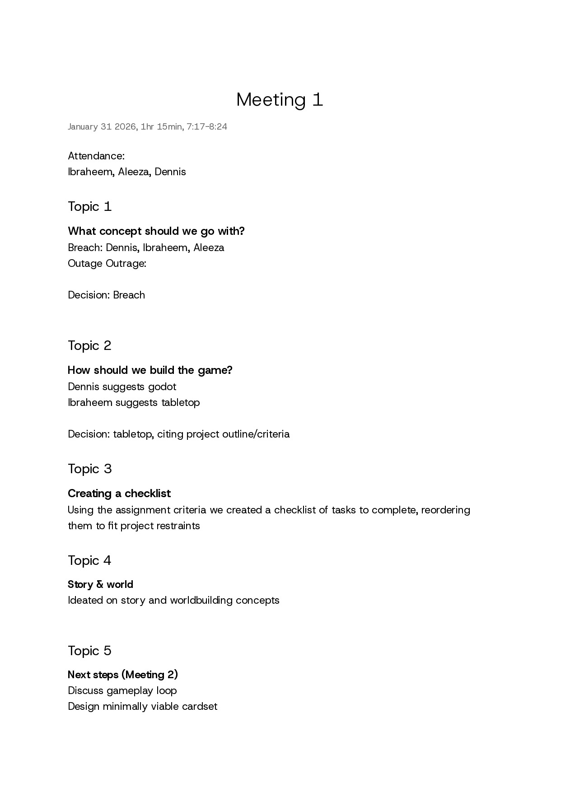
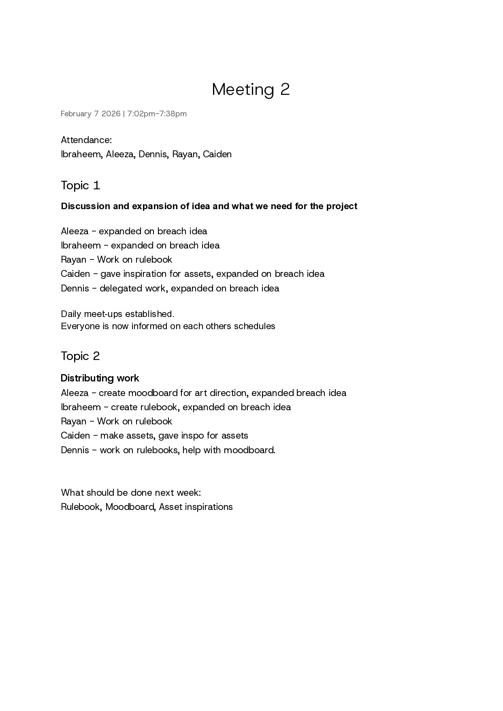
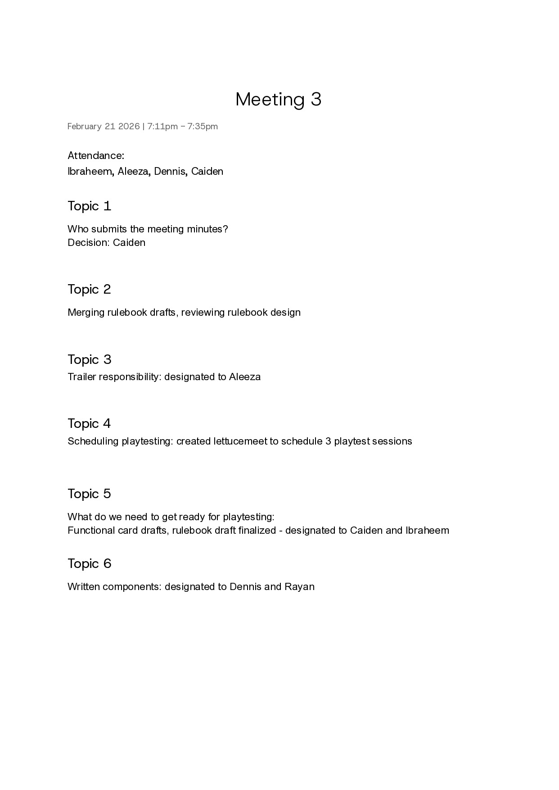
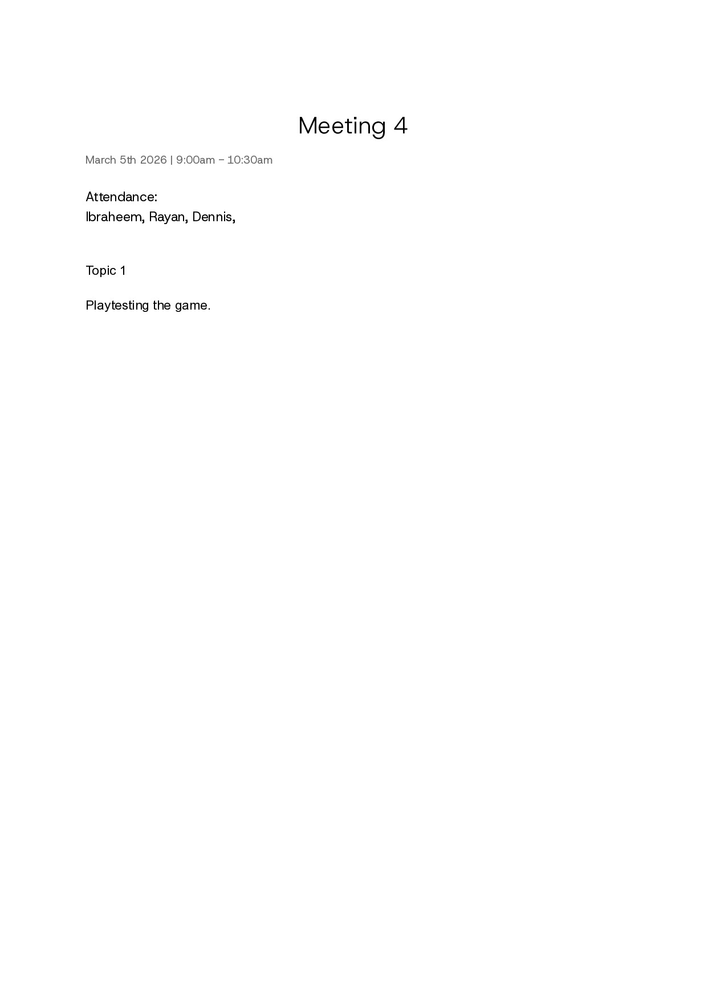
Playtesting for Breach occurred over several core sessions across February and early March. The initial focus centered around balancing the central economy and defining the core mechanics: the function cards (Steal, Weaken, Increase) and the d20 resolution system.
During our first major digital assembly (Feb 10), we formalized the concept of "logic slots" (If/Else structures) to emulate programming. This led to the creation of modular cards that players slot into their servers. A critical realization early on was that giving players unlimited basic function cards broke the intended economy. Instead, we shifted to a system where players buy functions from a shared market using harvested points (formerly called "cash").
By mid-February (Feb 13), we finalized the dual-economy: Ram (Memory) dictates how complex your programs can be, while Firewall (Security) protects your extracted points. We introduced a decaying security mechanic for the Central Resource Server (CRS) to ensure games progressed naturally towards a conclusion, scaling down its defenses every few rounds.
Late-stage playtests (March 4–6) focused on standardizing physical print dimensions (scaling our modular concepts to standard poker card sizes) and finalizing the "win fast vs. win big" ticket dynamic. We observed that games lasted around 30 minutes, primarily because the table aggressively targeted the CRS, causing the global pool to deplete faster than anticipated. To adjust, we increased the CRS starting pool and ensured that spent points in the shop circulated back into the CRS to maintain game length and tension.
You can play our finalized digital prototype online at: https://iat210breach.vercel.app
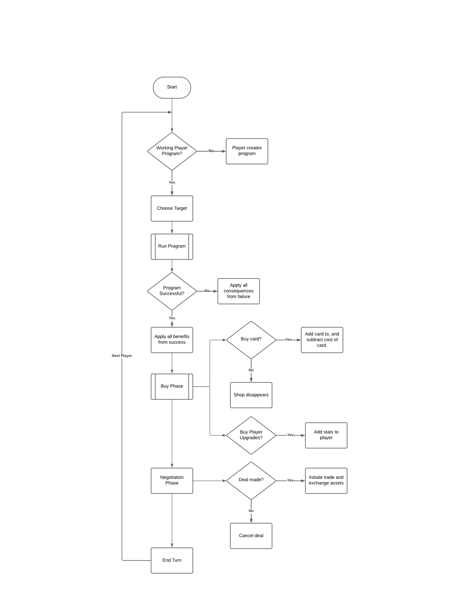
Game balance was adjusted mainly through the d20 security check: to succeed, you roll equal to or higher than the target’s Security. A simple way to estimate success is: count how many die results work and divide by 20. For example, against Security 10, rolls 10–20 succeed (11 results), so that’s 11/20 = 55%. Against the CRS at Security 12, rolls 12–20 succeed (9 results), so 9/20 = 45%. This 10% gap intentionally makes the CRS slightly harder to exploit than other players early on, while still being a reliable shared target. We also balanced “big turns” with the natural 1 / natural 20 rule: a 1 ends the program (so longer programs are riskier), while a 20 makes the rest of the turn succeed, which adds exciting, rare momentum swings without making them common.
We used Memory as the main limiter on combo strength, because function cards cost memory each time they activate (and loops repeat those costs). Players start at 5 Memory, so strong early turns are possible but capped. A simple example is the common setup-payoff line: Super Weaken (3GB) then Steal (2GB) totals 3 + 2 = 5GB, meaning it fits exactly but leaves no room for extra function spam. That’s deliberate: you can pull off a meaningful attack, but if you try to loop it, memory adds up quickly and your program can terminate for exceeding memory. This made playtests feel fair because players could plan combos, but the game naturally prevents one player from executing unlimited “engine” turns without investing in memory upgrades.
We used percent based point effects (like Steal = 10% of the target’s points) instead of flat steals because percentages scale automatically across the whole game. A flat “steal 10” is extremely strong when someone only has 20-30 points, but becomes minor when servers and the CRS reach 100+; with percentages, the payout scales naturally (10% of 30 = 3, 10% of 120 = 12). This also creates a soft catch up mechanic: the most profitable targets tend to be the players who are ahead or the CRS, which grows as everyone spends points in the shop, so players who are behind can make smarter target choices to close the gap. At the same time, it discourages “kicking someone while they are down,” because stealing from a low point player gives a small return compared to hitting a rich target. Overall, percent based modifiers force deeper thinking about timing, target selection, and risk, you are not just maximizing your own points, you are watching who is accumulating points, who is close to a ticket, and when it is worth taking a bigger swing.
Finally, we balanced pacing and comeback potential through the point economy. Ticket prices increase (30, then 60, then 90), which prevents every player from racing the same cheap escape and forces interaction as the game progresses. We also made it so points spent in the shop are added to the CRS, which keeps the CRS relevant and helps prevent runaway leaders: if the table collectively spends 50 points on cards/upgrades, the CRS gains +50 points. Since Steal takes 10% on a success, a successful Steal from a 150-point CRS would be 15 points (10% of 150), compared to 10 points when it’s at 100, so shopping naturally increases the value of attacking the CRS later. Together with the 24-round limit, these numbers create a consistent arc: early turns are constrained by memory and moderate success rates, midgame spending grows the CRS as a catch-up target, and escalating ticket costs push the endgame toward high-stakes decisions rather than a quick, solved strategy.
Several compelling strategies naturally emerge from Breach’s core mechanics, encouraging different play styles and adaptability:
In our first playtest with three players, the game lasted about 30 minutes. Because players targeted the central server often, its points were drained fairly quickly, which ended the game sooner than expected. In future sessions, we expect the game to last 30–60 minutes, depending on play style. If players focus more on attacking each other and upgrading their servers, the game will likely take longer. Increasing the starting points of the central server could also extend the average playtime if needed.